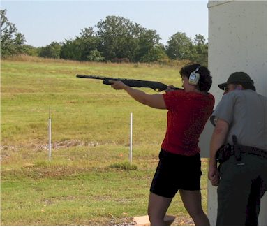
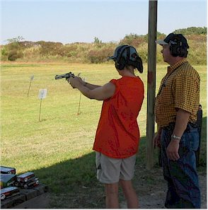
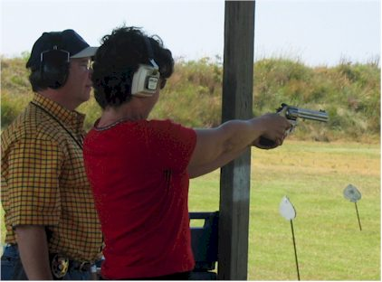
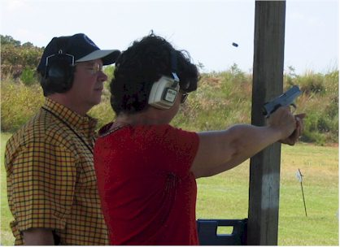
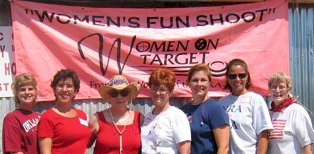
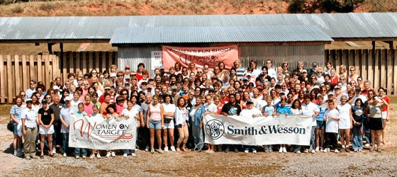

Saturday, September 11, 2004
| This was my first time to attend the annual
'Women on Target', the largest instructional shooting event for women in the
U.S. There were 250 women in attendance and an incredible number of
volunteers and sponsors. It was held at the Oklahoma City Gun Club,
which is actually not in OKC but in the small town of Arcadia, near
Edmond.
It was an all-day, women-only event that let us try many different
kinds of guns in a very non-threatening atmosphere. To give an
example of how non-threatening it was I will provide a couple of comments
that I overheard during the day, "My earrings are getting caught in
my ear protection." and, "It doesn't matter how accurate
you shoot as long as you look good holding the gun." Where else
do door prizes alternate between a Sea Salt Scrub and a .22 pistol?
It was great. |
|
 |
 |
| Here I am demonstrating terrible form with a shotgun, shooting
skeet. If I leaned back any further I'd have fallen over backwards!! I did shoot 3 of them though. Yea Me! |
This is my friend Jonni on the pistol range. We met through the OKC Outdoor Network. She was great company that day. |
 |
 |
| Here I am with a .38 revolver | And now with a 9mm pistol in an action shot. I thought this
was cool how you can see it kicking and ejecting the casing. (It was kicking, I was not shooting at birds!) |
|
 |
Many of my new friends from the Edmond Republican Women's club were there that day so we gathered for a group picture. |
|  |
|
| I'm in the back, just to the left of the banner. | |